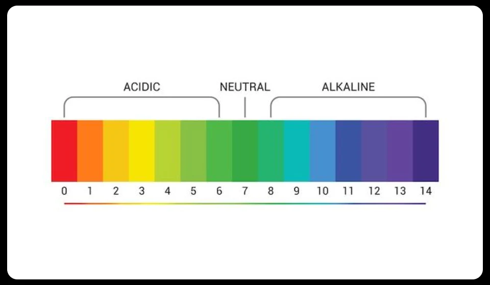
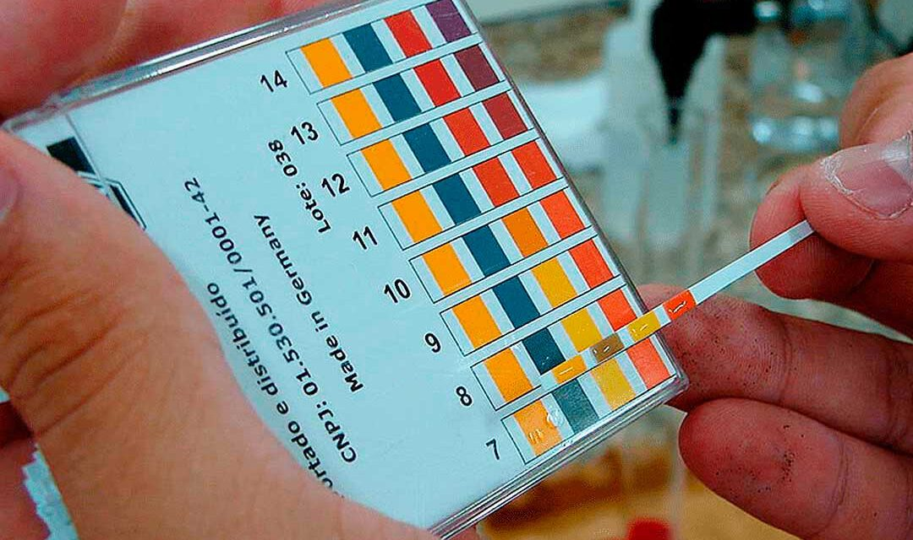

Teoria àcid-base
context històric
A finals del segle XIX, Svante August Arrhenius va formular la teoria de la dissociació electrolítica, amb la qual podem explicar les característiques de les substàncies àcides i bàsiques. Aquesta teoria continua sent una de les bases per a l'estudi de les reaccions àcid-base.

Substàncies àcides
Les substàncies àcides són aquelles que, quan es dissolen en aigua, alliberen ions d'hidrogen (H⁺). Generalment tenen un valor de pH inferior a 7. Un exemple d'àcid és l'àcid clorhídric (HCl).
Substàncies bàsiques
Les substàncies bàsiques són aquelles que, quan es dissolen en aigua, alliberen ions hidroxil (OH⁻). Generalment tenen un valor de pH superior a 7. Un exemple de base és l'hidròxid de sodi (NaOH).
Procés de neutralització
Neutralitzar una substància consisteix a fer reaccionar un àcid amb
una base. Durant aquesta reacció, els ions H⁺ i OH⁻ s'uneixen per
formar aigua. El resultat final és la formació d'una sal i aigua.
Àcid + Base → Sal + Aigua
Escala de pH i pOH
El pH és una escala que permet mesurar el grau d'acidesa d'una
substància. Els valors inferiors a 7 corresponen a substàncies àcides,
el valor 7 correspon a una substància neutra i els valors superiors a
7 corresponen a substàncies bàsiques.
El pOH és una escala similar, però relacionada amb la concentració
d'ions hidroxil (OH⁻).

Substàncies indicadores
Els indicadors de pH són substàncies que canvien de color segons l'acidesa o la basicitat d'una dissolució. S'utilitzen habitualment als laboratoris per determinar de forma visual el valor aproximat de pH d'una substància.

Qüestionari:
1. Una substància ____ és aquella que es dissocia en ions d'hidrogen (H⁺).
2. Una substància ____ és aquella que es dissocia en ions hidroxil (OH⁻).
3. Quin dels següents compostos és un àcid?
4. Quin dels següents compostos és una base?
5. Què es forma durant una reacció de neutralització?
6. Un valor de pH igual a 7 indica que la substància és:
7. Un valor de pH igual a 2 indica que la substància és:
8. Un valor de pH igual a 12 indica que la substància és:
9. Quina és la funció dels indicadors de pH?
10. Segons la teoria d'Arrhenius, un electròlit és una substància que: